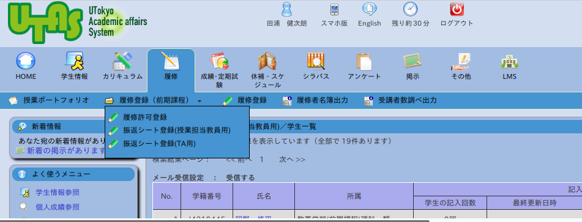

2022年度
-
6/22 予定
- 説明: リスト
- 説明: numpy 配列(array)
- チーム作業
- ミニ発表(8, 1, 5, 2, 4 の順)
- 6/29 は10, 6, 7, 9, 3
- 6/22 授業で説明しきれなかったことを動画で説明しています. ITC-LMSで「教材」を見てください.
-
6/22
授業内ではやれませんが, pmp11 - pmp17を配布しています
(意欲のある人の自習用). 学習の順番
説明 ノートブック 6/22の説明 pmp11, pmp12 動画 01-matplotlib pmp13 動画 02-matplotlib-2変数 pmp14 動画 03-matplotlibでanimation pmp15 動画 04-偏微分方程式 動画 05-1次元-偏微分方程式 pmp16 動画 06-熱伝導方程式 pmp17 -
6/15 予定
- 微分方程式のアニメーションを少し解説
- チームでpmp10を解く
- 目標の議論, できれば実装開始
- 議論の進捗, 振り返り, 感想 を書いてください.
-
6/8 予定
- チームで何をするか相談. なるべく書きながら
- ミニ発表 (3分 x 10); Word, PowerPointのメモ, 手書き, ホワイトボード
- 振り返り, 感想 を書いてください(授業終了時, 終了後どちらでも)
-
5/25 予定
- 青木先生講義
- チームで何をするか相談
-
5/18 予定
- チーム分けのためのアンケート に授業開始時(前でもよい)に答えてください
- 説明: 問題選び・作り について
- チーム分け決定・発表
- pmp08 (微分方程式), pmp04 (3Dグラフィクス), pmp09 (微分方程式をアニメーション)
- 次回(5/25), 東工大 青木尊之先生に, 野球の変化球を題材にした, 流体力学の特別講義をしていただきます
-
5/11 予定
- 10:25-10:35 前回を思い出しながら各自の続き
- 10:35-10:55 Python Speed Learning スライドで 説明(文法について; 繰り返し)
- 10:55- pmp04, pmp05, ...
- 進捗収集, 答え共有, 感想(振り返り)
2021年度
- 2021/7/9 なるべく授業中に, 授業アンケートに答えてください. ITC-LMS 「授業の「アンケート」のセクションに配信されています」
- 2021/7/9 予定
発表!!
順番 (家; 教室; ... かわりばんこになるよう)
4, 1, 5, 2, 6, 3, 7 - 8:15 時点でのコードをまとめました. workplace 開いてください.xlsx からアクセスして下さい. アップロードもできますので追加, 変更あればお願いします
- 2021/7/2 予定
今日は, 全体でのミニ発表ではなく,
各班ごとに少し時間を作って「TA訪問 (10分/班)」を行います.
- 8:30-9:00 最終目標に向けた作業
- 9:00- TA訪問 --- 10分/班 (高品君: 1, 2, ... 高橋君 7, 6, ...) 現状を, コードや動作例を見せながらTAに説明しつつ, 来週の発表に向けた相談をしてください.
- 今日の終わりまでに, 発表スライドの表紙(タイトル, 名前)を作ってください (タイトルはあとから変更してもOKです. とりあえず書き始めることが肝心). また(来週までに) 味気ない1班, 2班, ... ではないチーム名を考えましょう.
- 2021/6/25 予定
- 8:30-9:05 最終目標に向けた作業
- 9:05-9:20 ミニ発表 4, 1, 3, 7, 6, 5, 2
- 9:20-10:00 最終目標に向けた作業
- 2021/6/25 最終回(7/9)について
- 各チーム発表 5-10分
- コードによる実演 + スライド (Officeのフォルダにスライドを作成)による説明
- メンバー全員が少しずつでもしゃべることが望ましい
- 発表後に感想を一言
- 2021/6/25 Jupyterで新しい空のnotebook
を作るには, Files -> New -> Python 3 を選択します
(動画).

- 2021/6/19 Google ドライブに, 偏微分方程式の解説と, そのプログラミング, 可視化方法をアップしました. 自分のグループの課題で必要になりそうだったら読んでみてください.
- 2021/6/18 (はや10回目)予定
- 8:30-9:00 (演習: 各チームの進度に応じて問題は調節)
- リスト : pmp11_list.py の問題をグループで解く
- matplotlib : pmp13_matploblib.py の問題をグループで解く
- 答えを fetch できるようにしました(ans_pmp11_list, ans_pmp13_matlib)
- 9:00-9:45 最終目標に向けた議論と作業 (演習問題が終わっていなくても気にせず)
- 目標を決めて「どう解くか」の議論になるべく入りましょう
- 9:45-10:00 進捗ミニ発表 順番 [2, 5, 6, 3, 1, 4, 7]
- 8:30-9:00 (演習: 各チームの進度に応じて問題は調節)
- Google ドライブにいくつか説明動画をアップ; 週末に 偏微分方程式 の説明をアップするつもりなので, 見てください.
- 2021/6/11
- 6/11 の予定
- リスト : スライド説明 (9節, 12節), pmp11_list.py
- numpy : スライド説明 (3節), pmp12_numpy.py
- グループでpmp10_ode_group_work.pyを解く(必要に応じてpmp09_ode_anime.py などをする時間をチームで設ける)
- matplotlib : スライド説明 (5節), pmp13_matploblib.py, pmp14_matplotlib_2v.py, pmp15_matplotlib_anim.py
- 6/11 の予定
- 2021/6/11
- 6/18までの各自の宿題
- リスト : pmp11_list.py を読み, 実行して理解 (問題は解かなくても良い)
- numpy : pmp12_numpy.py を読み, 実行して理解 (問題は無い)
- matplotlib : pmp13_matploblib.py を読み, 実行して理解 (問題は解かなくても良い)
- pmp14_matplotlib_2v.py, pmp15_matplotlib_anim.py を読み, 実行して理解 (問題は無い)
- 6/18までの各自の宿題
- 2021/6/11
- 6/18 の予定
- リスト : pmp11_list.py の問題をグループで解く
- matplotlib : pmp13_matploblib.py の問題をグループで解く
- ...
- 6/18 の予定
- 2021/6/4
- 6/4 の予定
- -9:15 各チームでpmp08, pmp09, pmp10 ; pmp10をやることを目標に. そのためにpmp10の練習問題のいくつかをかたづける. いつものようにみなで進捗情報を交換してから, 何に時間を使うかを決める
- -9:45 各チームでのテーマ, 目標議論; 前回の続きで, テーマと目標を議論する
- -10:00 テーマ目標のミニ発表・進捗を全体で共有 [4, 5, 7, 1, 2, 3, 6]
- 6/4 の予定
- 2021/5/21
- 5/21 の予定
-
Googleシートを開いて,
Microsoftフォルダへアクセスし,
0-開いてみてください.xlsx
を開いてみてください.
- 指示に従い, xlsxに書けることの確認
- 指示に従い, workplace/チーム番号/memo.docx を開く
- 各チームでの議論(25分); 各チームの課題をどうするか, まずは各自が考えてきたこと, 方向性を出し合ってください. その際, 出てきたキーワードをmemo.docxに残していく (アイデアをふくらませるため + 後で発表のため)
- 議論の進捗共有(10分)
- もう一度各チームでの議論(25分); 上記と同様; 終わりが近くなったら, 来週までに考えてくることを決めて終わる
- 講義 (30分) 微分方程式 / 偏微分方程式
-
Googleシートを開いて,
Microsoftフォルダへアクセスし,
0-開いてみてください.xlsx
を開いてみてください.
- 5/21 の予定
- 2021/5/21
以下をFetchできます
- pmp05, pmp06, pmp07 の答え
- pmp09 (読むだけ)
- pmp10 (練習問題. 授業時間内にすべてやろうとしなくてよい)
- pmp11 (グループワーク)
- 2021/5/18
- Jupyter notebook pmp07に間違いがありました (ご指摘ありがとうございます). 以降, 見つかった間違いを 下にまとめます
- 2021/5/14
- 5/14 の授業もプログラミング練習
- 次回以降, 最終課題のための議論を始めてもらうのでその 予告 (問題選び・作り)
- 2021/5/7
- 5/7 の授業もプログラミング練習
- 4/30 と同じ形式で行います. 前回の続きを進めてください
- pmp04_vptyhon にまつわるトラブル
- 絵を出そうとして, 以下のようなエラーが出てしまった場合
PermissionError: [Errno 13] Permission denied: '/usr/local/share/jupyter/lab/static/vpython_data/rough_texture.jpg'システムの問題ですのでお知らせください 申し訳ありません. - 絵を出したつもりが(エラーにはならないものの)絵が出ない場合
- 実はページの別のところ(最初に絵を出したセルの出力) に出ている場合があるので見てみてください
- またはメニューの Kernel -> Restart and Clear Output してからそのセルを実行してみてください
- 絵を出そうとして, 以下のようなエラーが出てしまった場合
- チーム分けは前回と同じですが, 同じチームで教室と家に 別れてということがないように多少の入れ替えをするかもしれません.
- 2021/5/3
- pmp01の回答を更新し, いくつか解説を加えています(すでにFetchをした人は一旦消す必要があります. やり方)
- 2021/4/29
- 4/30 の授業はプログラミング練習
- Googleシートで自分のチームを確認し, gatherに入り, チーム番号が書かれた机についてください (教室で受けている人もgatherに入った上で, 物理的に同じ机に座る).
- 試みとして, こちらからスライドで説明することはしません(必要を感じたらします).
- 今日のプログラミング練習では pmp01, pmp02, ... の中の Problem を, 順に片付けていくことを目標にします
- チームでのプログラミング練習の進め方:
必ず以下を守って, 「自分ができたからといって他の人を置いてきぼり」
にしないようにしてください.
- 次に解くべき問題を確認(「次はpmpXXのProblem YYね」)
- すでに全員ができていたらその問題は終了. 次の問題へ行く
- まだという人が一人でもいたら, 相談の上時間を決めて, その時間まで取り組む. 時間は短めに. 説明を読んでいないという場合は少し時間が必要かもしれないが, せいぜい5分. 説明がわからないという場合は遠慮なく, できている人に聞いたり, 田浦に聞いたりしてください. すでにできている人はその間, 適宜先へ進む(質問が来たら答える).
- 約束の時間が来たら, 一人(まだだった人がいればその中の一人)の 画面を共有 して, 「相談モード」で問題を解決する; 注意: 「全員が自力でできるまで待つ」と, いつになるかわからないので, max 5分なら5分と, 時間を決めて先へ進む. 質問をしたり, 残りの人が教えたりして解決する. 特に最初のうちの練習問題は 「自力で解く」ことにこだわらなくて良い. プログラミングは習うより慣れろだから, 特に最初のうちは, 答えを聞いて次の問題が解ければ, それで学んだことになる.
- 同じ理由で, チーム内の誰か一人が解けたら, その答えを他の人も写して, 全員が解けた状態にしておくと良い. 最初のうちは答えを写すだけでも練習になる(漢字練習, 英語の書き取り練習と同じ)
- 時間がたっても誰も解けていないとか, 答えが合わない, ということがあるかもしれない. その場合も時間が来たら「相談モード」に移行して皆で解決するようにする. 最初のうちの初歩的な練習問題では, 時間をかけて悩む意味はあまりない.
- 相談しても答えが出なければ, 長時間悩まず, 答えを見る. 全員で「あーそうか」となればそれでよい
- そのようにしてその問題がチーム内で解決したら, 次の問題へ進む
- 以上を, 1セット40分で2回繰り返す予定
- どこまで解けたかを競っているのではないが, 上に述べた理由で, 特に最初のうちは1問にあまり時間をかけて悩む必要はないので, 無理無い範囲で, 早めのペースで進めることを目標にする
- 来週もこれをやりますので, チームで自習までの努力目標を決めておくと良い. 最低限, 説明は全員が同じところまで読んでくるように約束をすると良い. 徐々に, その場で5分で解決しない問題も増えてくるので, 1個や2個, 問題を解いてくるとよい.
- 今日の感想をUTASで「振り返りシート」に記入してください (UTAS -> 履修 -> 履修登録(前期課程) -> 振返シート登録; 教員と学生で少し違うかもしれません. 教員から見るとこんな感じです). 
- 2021/4/20
このゼミ固有の初回(第3週)は, 4/23 (金)です.
初回はKOMCEE 401で行います
(4/23の登校がどうしても困難な場合は下記連絡先まで事情をお知らせください).
- 大学のネットワーク(UTokyo WiFi) につながるパソコンを持参してください (困難な場合は下記連絡先までお知らせください). 電源につなげるコード(ACアダプタ)も忘れず持参. そのパソコンで,
- UTAS, ITC-LMSにアクセスできるように (UTokyo Accountの番号やパスワードなどがわかるように) しておいてください
- 大学のGoogleアカウント(ECCSクラウドメール) でサインインできるようにしておいてください. 例えば このページが見られるようにしておいてください. ちゃんとやっているつもりなのに見れない(アクセス権をリクエスト, というのが出てしまう)場合はお知らせください.
- 準備で問題がある場合は uteleconを見ましょう
- 2021/4/20 このゼミの受講が決まった人は, 初回(4/23)に先立ち このシートに同日の2限以降の予定を教えて ください(+ 自己紹介). その後の実施形態を決めるための参考にします.
- 2021/4/20 ITC-LMS このゼミのページ
- 2021/4/20 教員 + TA のメールアドレスは pmp@eidos.ic.i.u-tokyo.ac.jp です. 連絡, 質問はこちらへメールを送るか, ITC-LMSの教員あてメッセージを使ってください.
2020年度
- 7/8
- 授業アンケート回答よろしくおねがいします. いつものGoogle Spreadsheet ( 自己紹介その他もろもろ用シート ... ) を見て下さい
- 空き時間にこちらのアンケートにもお応え下さい(問題なければ授業の最後に結果を共有します)
- 余談: 登校が可能であれば使っていたはずの KOMCEEという教室(ここにいるつもりで...)
- 10:25-10:33最終打ち合わせ (8分)
- 10:35- 発表 [順番: 素直に 1,2,3,4,5,6,7 でどうでしょう]
- 発表は5分以内 (+ 質問時間 5分)のつもりで
- (できる人は)発表直後にマイクオンで拍手してください
- スライドを見る限り充実の予感しかしません! 時間超過に気をつけましょう
- 発表最後に全員, 一言「感想」をお願いします
- こちらで見つけたスライドへのリンクは上記Google Spreadsheet へまとめておきましたが違う場合はお知らせ下さい
- 7/1
- 次回が最終回
- タイマー
- 今日はひたすら完成へ向けてグループワーク
- 「当初宣言した通りのことができない」は気にせず, 「今日の終わりまでにできそうなこと」 を決めそれに向かって取り組んでください
- 来週は発表(作業の時間はない). 完成度は気にせず「何をしたかを初耳の人にも教えてあげる」 つもりで
- 形式 (どれでもよい)
- WorkplaceにあるMicrosoftのPower Pointでスライド
- 手書き
- Jupyter Notebook に説明を書く (Markdownセルを使う)
- 内容
- 目安: 発表時間5分 + 質問5分
- 「話すことないよー」と心配する人が多いですが実際には, 長引く班が多いので, 喋りたいことを極力コンパクトにまとめるつもりで準備するが吉
- 動いたもののデモ
- 何をしたか, どうモデル化しかた(数式など)
- プログラムとしてどう書いたか
- 6/25
- 今日を入れてあと3回! できれば最終回は発表にしたいので実質あと2回
- 10:25- 各チーム目標へ向けた議論
- 11:00- ミニ発表 3, 2, 1, 6 (目安: 5分 x 4)
- 11:20- 各チーム目標へ向けた議論
- 6/25
- matplotlib (グラフの可視化) の使い方の動画をアップしています (ITC-LMSを見てください)
- 6/17
- 議論 10:35-11:20ごろまで
- ミニ発表3チーム 10:20-11:40ごろまで 5, 7, 4 (来週 3, 2, 1, 6)
- 11:40- 配列/matplotlib説明 (スライド13以降)
- 配列練習問題 pmp12
- matploblib練習問題 pmp13, pmp14
- 6/10
- 今日の予定
- 10:25-10:40 説明 「リスト」 スライド 9節55枚目〜
- 10:40-10:55 pmp11_list.py の「問題1」手前まで各自で学習
- 10:55-11:40(最大) 班で協力して, pmp11_list.py の「問題1」を解く
- 前回同様, 一人が手を動かす役, 残りの人は口を出す役
- 11:40-12:10 最終成果物に向けた議論(問題設定, 解き方)
- 今日の予定
- 6/3
- 今日の予定
- 10:25-10:40 下記を簡単に説明
- 10:40-11:10 目標とそのやり方議論続き (いいアイデアが浮かべば目標を変えるのもいいけど, あるところで決めて前進する(「どう」するかの議論に移る) のもよい)
- 11:10 - 「グループの共同で」1問問題を解く. pmp10_group_programming
- 11:50 - できれば, 動いたものを見せてもらう
- 各グループのアイデア記入ファイル(word)に, コメントを書きました. (吹き出しをクリックしてください). コメントの観点は主に以下です.
- 目標設定のポイント
- 再現したい現象(ゴール)を決める
- それがおきるための単純化されたモデルを考える. 現象を 「根本的な原理(第一原理)」 から忠実に再現しようと思う必要はない.
- 例: ボウリング.
- ピンの形やボールの回転などをすべて考慮した, 3次元の世界をシミュレートしようと思う必要はない(かもしれない).
- 再現したいことはなんだっけ?
- 真ん中に当てるとスプリットする(端にピンが残る).
- 少しずらしたほうが良い.
- または少し斜めに入ったほうが良い.
- これであれば, おはじき(円盤)の衝突を再現すれば良いことになる. やってみてうまく行かなければ徐々に複雑にしても良い.
- 例: 水切り
- 単純化されたモデルと言っても, その時点で難しい.
- そもそもなぜ水切りが起きるのかの, 大雑把な原理の理解が先決
- 文献(といってもGoogle先生, Wikipediaなど)調査. 「無条件に鵜呑みにしない」という態度で臨めばOK. それは立派な図書館の本でも同じこと
- 大雑把に理解したら, 改めて「再現したい現象の単純化」を試みる
- 今日の予定
- 5/27
今日(5/27)の予定
- 10:25- 目標についてグループ議論(30+分)
- 同じ画面を見ながら(画面共有); 目にしたページや動画などをどんどん共有ドキュメントにメモ
- 10:55- 議論の結果をミニ発表(1分以上/班. 話すことがあればもっと長くても良い)
- 11:??- プログラミング続き
- 5/13 次回(5/20)までにpmp07までの問題を スライドの51枚目までを読んで終了しておくことを目指して下さい ( Pythonチュートリアルの「4. その他の制御フローツール」 の4.1〜4.6あたりまでも参考にすると良いでしょう)
- 5/2 Pythonの自習用に おすすめ本をいくつか紹介しました
- 5/1 Safariで動かない問題はおそらく直りました. 試してみてください.
- 4/29 4/29 授業後のお知らせ
- 今日はSafariで動かない件とか, どういうわけかnotebookの中でコードを書く欄が抜けているとか(実はそれ以外にも抜けているところがありました), こちらの不具合のせいで色々ご迷惑をおかけしました.
- コードを書く欄が抜けている問題は直ったはずです. 直ったファイルを仕込んでいます. しかしすでに問題を解くのが進んでいて, もとの(壊れていた)ファイルに答えを記入し終えている人もいるので, 混乱が無いようファイル名を変えています. 例えば, pxxxxx.py.ipynb の代わりに pmpxxxxx.py.ipynb という名前で新たにファイルを仕込んであります
- 番号としては pmp07 まで仕込んであります.
- 今日までに一応カバーしたことで pmp04_vpython.py.ipynb までが解けるので, できれば次回までの宿題として, 各自pmp02-04までの問題を解いておくことを目指してください(もちろんその先へ進んでも構いません).
- 解けないものは放置で構いませんが, 授業時間内に初めて見るのではなく, 授業時間を, わからないことについてグループの他の人と相談したり, こちらが解説をしたりする時間に使えるよう, できることを進めておいて下さい. 進捗はこちらから見ることが出来るので, 適宜見るようにはしますが, 何かで詰まってた場合は遠慮なく聞いて下さい. ITC-LMSの履修者から教員へのお知らせでも, ITC-LMSの掲示板でも, メールでも良いです(メールアドレスはITC-LMSに記載しました).
- VPythonのグラフィックスがうまく出ないみたいなのはシステム側の問題であることも多いので, 何か変だったら, メニューのKernel -> Reset を試して, それでもダメなら遠慮なく連絡下さい.
-
Safariで動かない問題については, 次回までにできるだけ直したいですとは言うものの, 時間が取れるかわからないので, まずはChromeでやって下さい.5/1 更新 直ったと思います. 途中からSafariになっても作業内容は自然に引き継げます - Jupyter環境へアクセスするためのURLが書いてあるspreadsheetも, ITC-LMS経由で見られるようにしていますが, そのspreadsheetにアクセスする際は大学のECCSクラウドメール (xxxx@g.ecc.u-tokyo.ac.jp) でGoogleにサインインした状態でアクセスして下さい. やり方がわからない場合は 新入生・在学生のための, オンライン授業を受けるための準備: G Suite for Educationが使えるかのチェックを見て下さい. それでもわからなければ聞いて下さい
- Google Meetの部屋に入る際も, ECCSクラウドメール (xxxx@g.ecc.u-tokyo.ac.jp)でGoogleにサインインした状態でアクセスすれば, こちらの承認を得ることなく入室できます. 安全性の観点らもこちらのほうが望ましい(田浦が間違って部外者を承認して入室させる心配がない)ので, なるべくECCSクラウドメール (xxxx@g.ecc.u-tokyo.ac.jp)でGoogleにサインインして下さい. 上記のページ経由でそうなっているかのチェックが出来ます. また, 授業のURLは(田浦がいなくても)いつでも入室できると思いますので, そこにつないでみても良いです.
-
グループワークはいつから始まるのか? という質問がありました. プログラミング練習の進捗と, Web会議での部屋の出入りとか議論の慣れ具合にもよるのですが,
4/29 が(休講だった最初の2回を数えて)4回目. 以降の予定(あくまで予定)は, こんな感じを目指しています. ですので, 5, 6回目辺りは授業ではグループワークに
入りませんがそれに備えて各自に興味のあることを考えておいて欲しいと思います. このホームページの中
問題選び・作りのスライドも眺めるとヒントがあります.
- 5回目: プログラミング練習. ほんの少しだけグループワーク予告
- 6回目: プログラミング練習. グループワーク予告
- 7回目: 最終目標に関するグループでの議論を始める
- 8回目: 最終目標に関するグループでの議論を続ける/決める
- ...
- Pythonの自習に良い教材はないかという質問をもらいました.
- Pythonチュートリアルページ. このチュートリアルの3-5章あたりを寝ながらで良いので読んでおくと良いです．今練習していることの多くはここにも書いてあります. ただしプログラミングそのものが初めての人のための入門と言うよりは, プログラミング言語は知っている人のためのPythonの簡潔な入門という感じです.
-
プログラミングそのものは初めてという人のための概念的な入門を含めた書籍は,
別途, また見つかったらお知らせします.おすすめ本に追加しました. Pythonの情報はGoogleで探せばたくさん出てくるので, まずは気軽に色んなページを読んでみるのでも良いです. その他このホームページの中にも多数のリンクが生えているので気の向くものを読んでみて下さい
- 4/22 4/29の授業は前回とURL/使うソフトが代わります(4/22の授業中で試したとおりです). Email/LINEお知らせを飛ばしたつもりですが飛んでいない可能性があります. どこにつなぐかはITC-LMSを見て, 「お知らせ」欄でチェックしてください
- このページの検索方法: 田浦 初年次 で検索すると多分見つかります
2019年度
2018年度
- (5/2) 練習問題進捗共有
- (7/11) お疲れ様でした.
- (7/11) 今日発表した班もしなかった班も, 最終作品(プログラム)を 練習用環境にアップロードして下さい. まだ出来ていない人も, 今日の時点での物をアップロードして下さい. 今日の授業でも 述べましたが, 教室で使っていたPCで開いていたページのURL (http://localhost.../) というのではダメです. 練習環境 (http://pmp.../...)の方でやって下さい. 具体的には, 2, 3, 4, 6班の 作品はまだこちらで見られる状態になっていません.
- (7/11)
- 今日発表できなかった人は後日, まとめ(スライドないし, レポート. 今日の発表資料くらいのもの) を提出して下さい.
- 締め切り8/17 (金). ただしこれはあくまで, どうせ後日提出なら余裕を与えようと 遅く設定しているもので, できたらすぐに出してくれて構いません.
- 提出方法: 田浦までメールを下さい. 班の代表を決め, その人から田浦あてに, + 残りのメンバーをCCに含めて送って下さい. 田浦のアドレスはこのページの下の方にあります
- よく連携が取れて議論が行われているチームもあれば, メンバーの関与の度合いに差があるチームがあるという印象です.
- チームワークとして, 全員で協力 することを心がけて下さい. 問題の理解度やスキルに差があるチームもあると 思いますが, よく理解している人は周りを置いてきぼりにしない, そうでない人は, よく理解している人まかせにしない, という ことをお互いに心がけて下さい.
- (6/13) 今日の議論を受けてのいくつかの チームの課題と関係するコメント
- (6/13) すみませんが補講をする代わりに, 6/20, 27, 7/4に時間を35分ずつ延長します.
- (5/31) すみませんが, 6/6 (水) の回を休講とします. 補講は追ってアナウンスします.
- (5/16) 問題例1 問題例2
- (5/2) 練習問題解答例. PW必要です(授業で). 特に最初のうち, 「どう書いたら良いかわからない」みたいなときは, 見て先へ進んで下さい. ファイルを開くと, "I couldn't find a kernel matching Python 3. Please select a kernel" みたいなことを言われます. 出てくるメニューからVPythonを選んで下さい(ちゃんとした対策調査中).
- (4/25) 毎週アドレス申告
- (6/7 水) 家で練習するための練習環境(次項参照)でも, Visual Pythonが動かせるようにしました(ブラウザの中でアニメーションが動きます). Visual Pythonを使う練習問題の解答例ものせました.
- (5/24 水) 「家で練習します」という声が多かったのに反応して, 練習問題の解答例をのせました. いつものgooglesheet (振り返りシートに記載)からたどってください
- (5/24 水) 5/29 (月)に補講を行います(4/26 休講分). 授業でアナウンスしたとおり, 約半分の学生を2限, 残りを3限というふうにしています. 自分がどちらに出ることになっているかは, 振り返りシートに記載のページ (いつものgooglesheetです) に書いておきましたのでそれを見てください. また, 2限 -> 3限へ移りたいという人を早いもの勝ちで, 最大4名まで受け付けますので, 希望者はお知らせください(連絡先は 上記のgooglesheetに書いてあります).
- (5/18) 自宅から練習ができる環境を用意しました. 振り返りシートを見てそこに書いてあるスプレッドシートのURLをあけてみてください. そこに, (名前, 練習環境のURL, パスワード) の一覧(各人用別々)が書いてあるので, 自分用の練習環境にアクセスしてください. パスワードを聞かれるので, スプレッドシートに書いてあるパスワードでアクセス してください. その後は授業で使っている環境と同じように使ってください (New -> Python 2を選択). ただし, Visual Pythonは使えません.
- (4/??) いきなりすいませんが, 4/26 (水) は休講です.
-
教室で使っているPC (Linux)にDropbox
をインストールしましょう．
- やり方(その1): Dropbox ダウンロードサイトに行って， 「Ubuntu (.deb) 64-bit」をクリックして下さい． するとパッケージインストールソフトが勝手に立ち上がって， インストールしようとするので指示に従えばよいです．
- やり方(その2):
端末を開いて以下のコマンドを打つ
sudo apt-get install nautilus-dropbox
- 上記どちらでも良いです．どちらにしても終わったら，画面左上の
Ubuntuボタン(
 )を押し，
dropbox と打ち込むと，
dropboxアイコンが出てくる:
)を押し，
dropbox と打ち込むと，
dropboxアイコンが出てくる:

ので，起動します (このとき，やりかた(その1)でやった人は最初に何やら ダウンロードしに行くので時間がかかります)． - 無事起動したら，すでにDropboxを使っている人は， そのユーザ名，パスワードを入れて下さい． そうでない場合は今ユーザ名とアカウント名を決めて， 使い始めてください．
- ここまで来ると， 自分のホームフォルダの直下にDropboxというフォルダが現れます． すでに家などでDropboxを使っている人は， 家で見ているものと同じものが見えるようになります． 初めての人も， 後で家のマシンにDropboxを入れて同じアカウントでログインすれば， 家で同じものが見えます
- どちらの場合も，前回授業直後に送った， フォルダ共有招待メールにあるリンクを まだクリックしていない人は， クリックしてください． Dropboxフォルダの下に pmpというフォルダが見えるようになります． pmp/2016/班番号 というフォルダの下に， 作業結果を残せば(JupyterのFile -> Download as (.ipynb))， それが家でも見られるようになりますし， 班員，我々とも自動的に共有されます．
- 家のマシンで作業を継続したければ，自分のマシンにJupyter がインストールされていれば，.ipynbを直接開けばよいです． なければ 練習用環境を開き， .ipynbファイルをアップロードすればよいです．
- 東大蔵書検索システム GACOS; googleで gacos を検索すれば(きっと)見つかります.
- 検索実習動画 (初年次ゼミポータルからたどれます)
- 練習用環境です．復習に役立てて下さい．パスワードは授業でいいます．
- 練習用環境 に，練習問題の解答を徐々に載せていきます．practice.ipynb というファイルを開いてみて下さい．
- 練習問題の解答を直接ダウンロードしたい人は， これを右クリックして保存 ください．そののち，手元のJupyter環境で開けば手元で実行できます．
- matplotlibで アニメーションがしたい人へ
- 最終回へ向けて
- 何か動いた人は動いたものをデモ
- スライドにまとめて発表
- スライド作りを共同でやるには， Office OnlineやGoogle Driveが使えます．
- チームで相談して，できるだけのことを
- より具体化された問題案 を載せました
- 6/24の進め方 に関するアナウンスを読んで準備をしておいて下さい
- 問題7-3の解説 を載せました
- 6/17 は休講です
- 以下の日時に補講をします．
- 月日： 6月4日(木)5限
- 場所： K401 (いつもと同じ)
- 6/17 は休講です
- Python練習投稿ページ
- 質問や振り返りに対する回答で, 共有すると有益なものを書くためのページ .
- 検索実習動画 (初年次ゼミポータルからたどれます)
- GACOS; googleで gacos を検索すれば(きっと)見つかります.